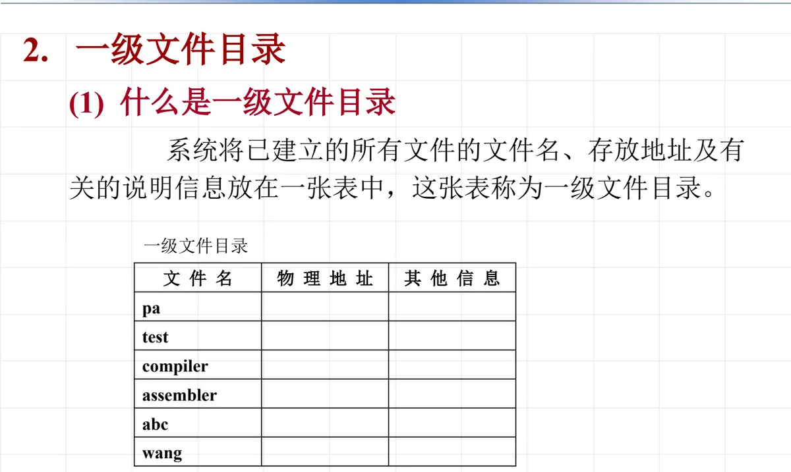
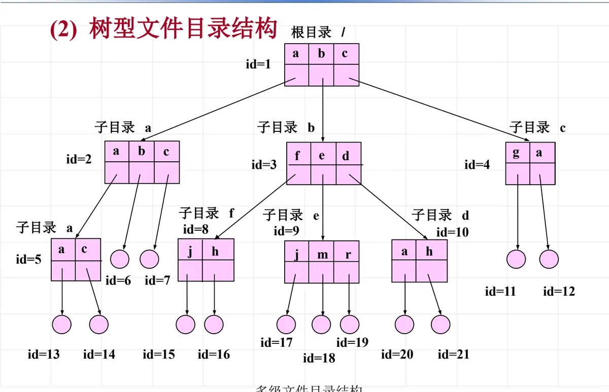
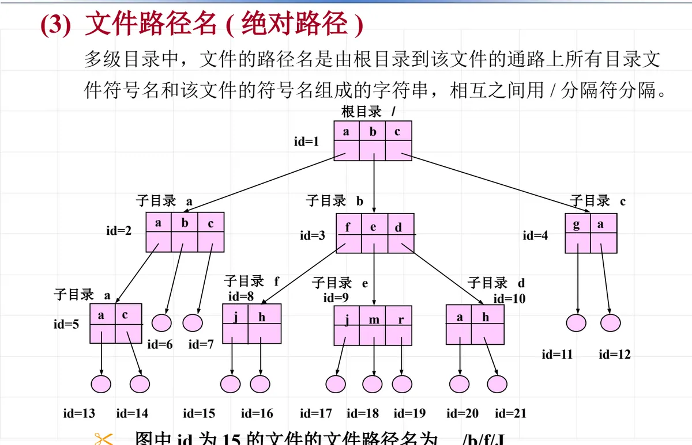
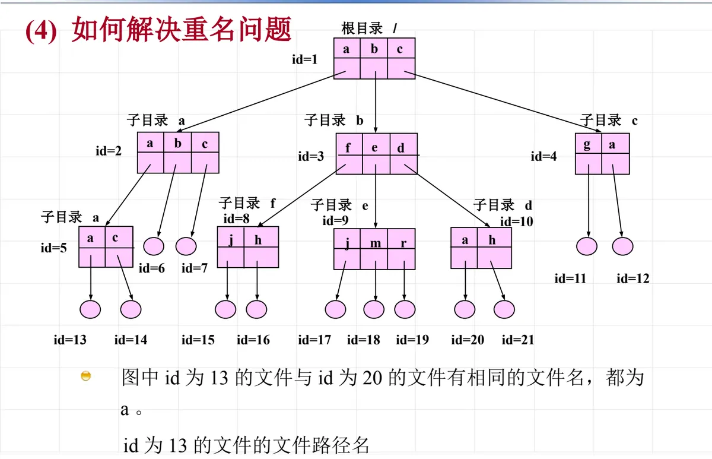
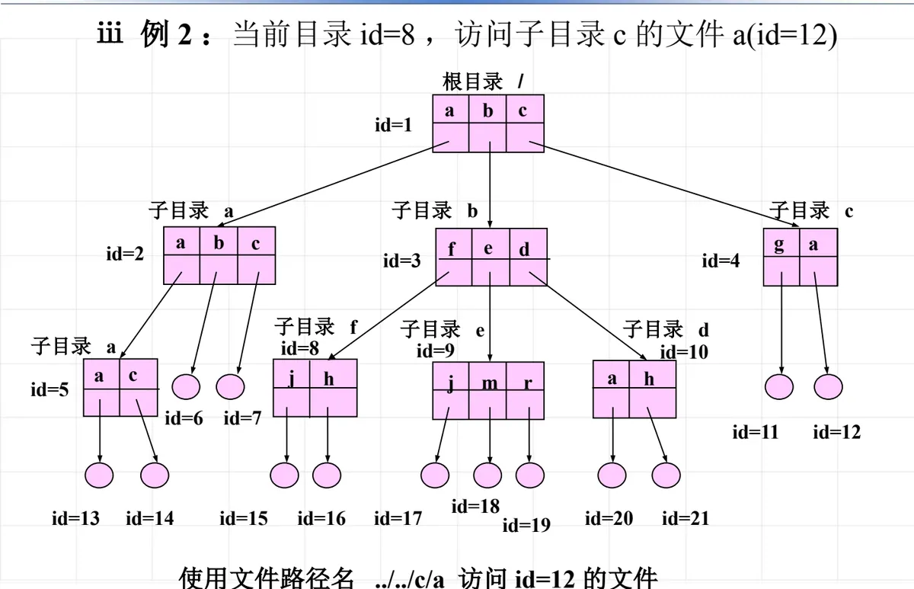
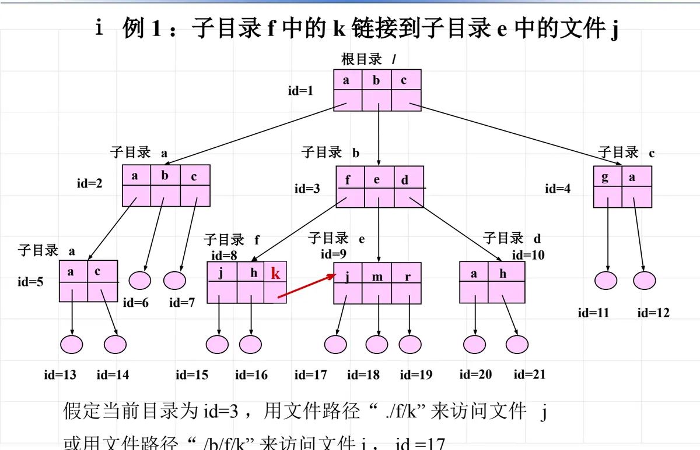
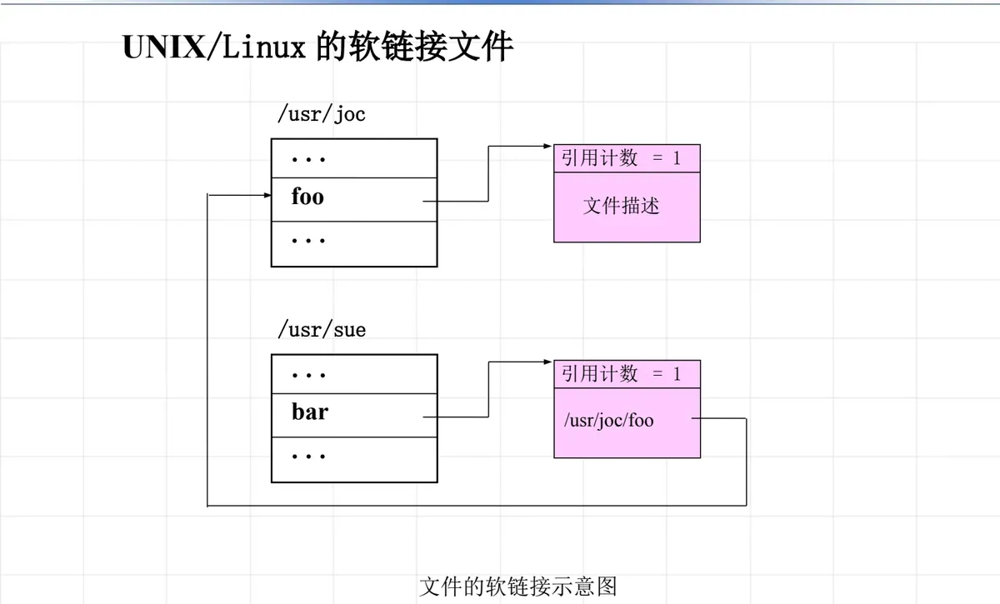
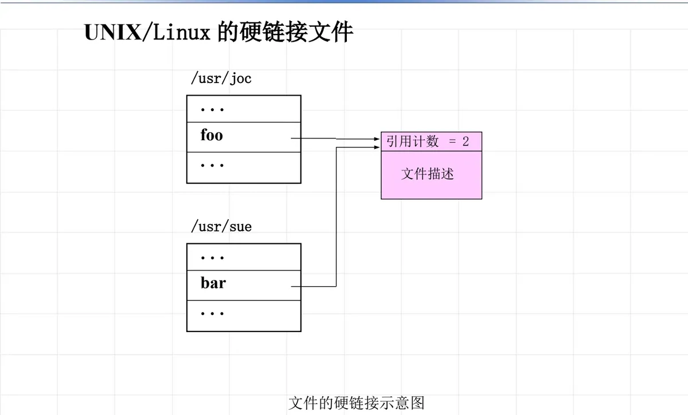
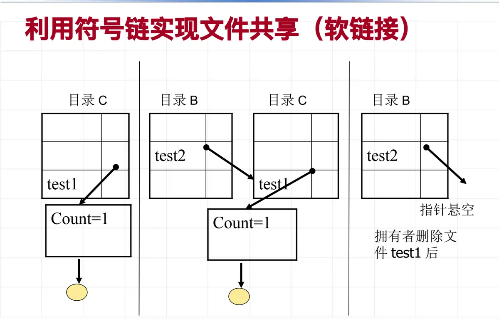
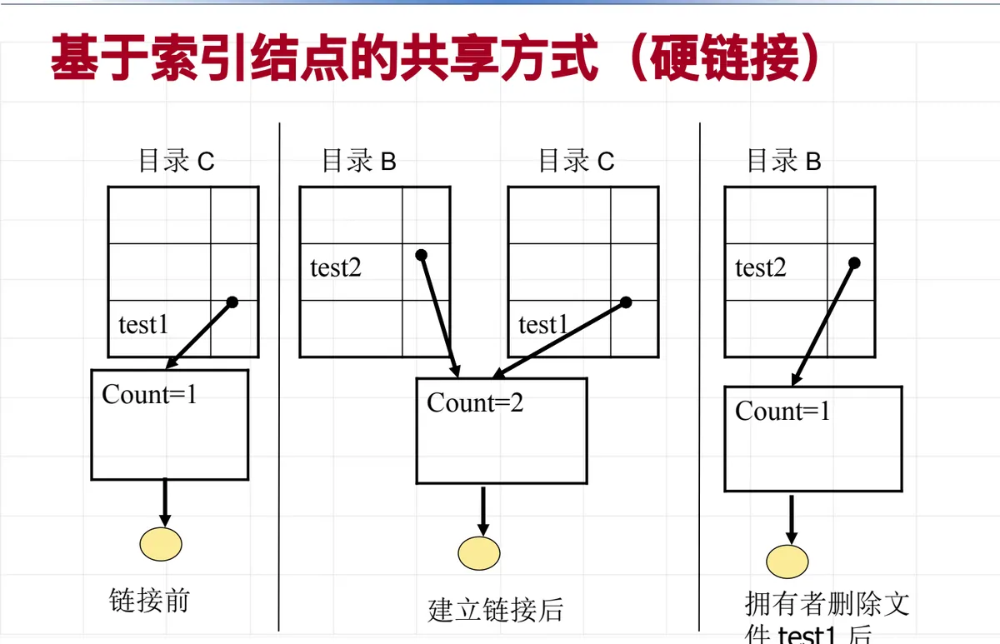

操作系统原理 · 第 9 章 文件系统
9.5 文件目录及其结构
文件系统要解决的两个转换——「信息的逻辑结构 → 存储介质的物理结构」和「文件操作 → 存储设备的 I/O 指令」——中间都靠一个数据结构牵线，那就是文件目录。这一节先看目录本身要记哪些东西，再看目录从「一张表」长成「一棵树」的过程，最后讲树型目录下的路径名、当前目录，以及让不同路径指向同一个文件的链接技术。
1. 文件目录的作用与目录项的内容
文件系统要解决的核心问题有两个：一是把信息的逻辑结构转换到存储介质的物理结构；二是把用户对文件的操作转换成存储设备的 I/O 指令。这两个转换过程中用到的主要数据结构就是文件目录：它把文件名和文件在辅存中的物理地址以及其他有关文件的说明信息、控制信息联系起来，从而实现「按名存取」——用户只需要说出文件名，系统就能找到文件的数据。按名存取是文件系统最基本的功能。
那么一个目录项（目录中的一条记录）里究竟要记什么？它既要让系统找到数据，也要支持权限控制和日常管理，通常包含以下几类信息：
| 信息类别 | 具体内容 |
|---|---|
| ① 文件名 | 文件的符号名，用户按它访问文件 |
| ② 文件逻辑结构 | 说明该文件的记录是否定长、记录长度及记录个数等 |
| ③ 文件物理结构 | 连续文件——指出文件第一块的物理地址、文件所占块数；串联文件——指出该文件第一块的物理地址；索引文件——指出索引表的物理地址 |
| ④ 存取控制信息 | 文件主具有的存取权限，以及核准的其他用户及其相应的存取权限 |
| ⑤ 管理信息 | 文件建立日期和时间、上一次存取时间、要求文件保留的时间等 |
| ⑥ 文件类型 | 例如可分为数据文件、目录文件、块存储设备文件、字符设备文件 |
可以注意第 ③ 项：目录项里怎么记物理位置，正好由上一节讲的物理结构决定——连续文件要记首块地址和块数，串联文件只记首块地址，索引文件记索引表的地址。目录结构由此和文件的物理结构衔接起来。
2. 一级文件目录与重名问题
最简单的目录形式是一级文件目录：系统把已建立的所有文件的文件名、存放地址及有关的说明信息统统放在一张表中，这张表就是一级文件目录。
一级文件目录实现了按名存取，结构简单。但它要求文件名和文件之间有一一对应的关系，也就是不允许两个文件有相同的名字——否则表里出现两条同名记录，系统就无从判断用户指的是哪一个。单用户环境下这不成问题；一旦到了多用户环境，重名问题（也叫命名冲突）就出现了：不同用户对不同文件起了相同的名字，即两个或多个文件只有一个相同的符号名。
要解决命名冲突、让用户获得更灵活的命名能力，文件系统必须放弃「一张表」的做法，改用多级目录结构。

3. 树型文件目录与文件路径名
多级目录系统的层次规则是：除最末一级外，任何一级目录的目录项既可以描述一个目录文件，也可以描述一个非目录文件（数据文件），而数据文件一定在树叶上。目录项层层指向下级目录，就构成了一棵树型（树形）文件目录：根在上、叶在下，中间节点都是目录。
课件给出的例子是这样的结构：根目录为 /，其下有子目录 a、b、c 等分支；每个目录的每个表目在图中用一个 id 标出。例如图中 id 为 15 的文件位于「根目录 → 子目录 b → 子目录 f」这条通路上，它的文件名为 j。

（1）绝对路径名
有了层次，就得有办法唯一地说出「是哪一个文件」。多级目录中，文件的路径名由「从根目录到该文件的通路上所有目录文件的符号名」加上「该文件的符号名」组成，各级符号名之间用 / 分隔。这种从根目录写起的路径名也叫绝对路径。例如图 2 中那个文件 j，其文件路径名是 /b/f/j——沿根目录、子目录 b、子目录 f 一路写下来，就不会有歧义。

（2）重名问题如何被化解
树型目录恰好把重名问题化解掉了：不同的分支是彼此独立的名字空间，只要同一目录内不重名，不同目录下完全可以有同名文件。课件图中就有这样的情况——id 为 20 的文件与 id 为 12 的文件名都叫 a，但它们的路径名分别是 /b/d/a 与 /c/a；用户给出路径名，系统逐级查找，落到哪一个分支是明确的，不会混淆。

4. 当前目录与相对路径名
每次都从根目录写起毕竟麻烦，于是引入当前目录（又称值班目录）：它是用户当前正在操作的目录。为进程指定当前目录后，该进程对文件的所有访问都相对于「当前目录」进行，这时的文件路径名由「从当前目录到目标文件的通路上各级目录的符号名」加上目标文件名组成——这就是相对路径名。其中 . 表示当前目录本身，.. 表示上一级目录。
课件给了两个例子：
- 若指定当前目录为子目录 b（图中 id=3），那么 id 为 20 的文件（在 /b/d 之下）可以用相对路径名
d/a或./d/a来访问，不必再写/b/d/a。 - 若当前目录是子目录 f（图中 id=8），要访问子目录 c 中的文件 a（id=12），就要先用两个
..回到根目录，再沿 c 下去，因此相对路径名是../../c/a。

../../c/a：先退到根目录，再沿 c 下去（原课件第 70 张）5. 链接技术：让目录表目指向目录表目
文件共享除了靠路径名，还可以靠链接。所谓「链接」，就是在相应的目录表目之间建立联系：一个目录中的表目直接指向另一个目录表目所在的物理位置。特别要注意，这种链接指向的不是文件本身，而是相应的目录表目。这种做法也称为连访，被共享的文件称为连访文件——用户从自己的目录出发，沿着链接就能访问到别人目录里的那个文件。
课件的例子是：子目录 f 中的表目 k 链接到子目录 e 中的文件 j。假定当前目录是子目录 b，那么用相对路径 ./f/k（沿 f 找到 k）或用绝对路径 /b/f/k 都能访问到文件 j——路径上最后落到的虽然叫 k，实际访问的是 e 中的 j。

./f/k 或 /b/f/k 均可访问 j（原课件第 72 张）6. UNIX/Linux 中的两种链接：软链接与硬链接
UNIX/Linux 把上述共享需求落实为两种具体的链接文件：硬链接（hard link）与软链接（又称符号链接，symbolic link）。它们的实现机制不同，行为差别也很值得对比。
（1）软链接（符号链接）
符号链接文件中并不包含实际的文件数据，只包含它所指向文件的路径。因此它可以链接到任意文件和目录，包括处于不同文件系统中的文件以及目录；路径既可以是相对路径，也可以是绝对路径。用户对链接文件操作时，系统会自动转到对源文件的操作；而删除链接文件本身，并不会删除源文件。

（2）硬链接
硬链接走的是另一条路：系统中的每一个文件或目录都有一个索引节点，通过索引节点访问文件或目录的内容，索引节点中存储了该文件的所有属性（不包括文件名）。多个目录项指向同一个索引节点，就是硬链接。因此硬链接的两个名字地位完全平等，谁也不是谁的「副本」。
删除一个硬链接文件时，索引节点的引用计数减 1；只要引用计数不为 0，文件的索引节点和文件内容就仍然存在，通过别的名字照常访问。硬链接有两条限制：只能用于同一个文件系统内，并且不能是目录。

（3）两种共享方式在删除时的表现
两种方式的差别，在「拥有者删除了被共享的文件」这一刻暴露得最清楚。
按符号链（软链接）方式共享时，链接文件里存的只是一个路径字符串。拥有者一旦删除了源文件 test1，路径就指不到任何东西了，共享者的链接变成悬空指针——访问它会失败。

按基于索引结点的共享（硬链接）方式共享时，共享者的目录项与拥有者的目录项指向的是同一个索引结点，只是引用计数由 1 变成 2。拥有者删除自己的目录项后，索引结点的引用计数减为 1，文件内容和索引结点都还在，共享者照样能访问——这也解释了为什么硬链接必须限制在同一个文件系统内。

（4）为什么不能对目录进行硬链接
- 非常容易造成目录的死循环，而且文件系统没有很好的办法检测。软链接可以用于目录，因为软链接文件是一种特殊的文件类型，文件系统可以检测到并做特殊处理来防止死循环。
- 父目录的含义会发生变化：一个目录出现多个父目录，甚至父子目录的辈分都会混乱（
..该指向谁不再确定）。 - 文件目录结构是一个树形结构，不能有环，而目录硬链接恰好会引入环。
本节小结
- 文件目录是把「逻辑结构 → 物理结构」「文件操作 → I/O 指令」这两次转换串起来的数据结构，它实现了按名存取；目录项通常记录文件名、逻辑结构、物理结构、存取控制、管理信息与文件类型六类内容。
- 一级文件目录把所有文件放在一张表里，简单但要求文件名唯一，多用户环境下会产生重名（命名冲突），必须改用多级目录。
- 树型（多级）文件目录中，中间节点是目录文件、数据文件在树叶上；用从根目录写起的绝对路径名（如
/b/f/j）唯一定位一个文件，不同分支因此可以放心地使用同名文件。 - 用当前目录（值班目录）作起点可以写相对路径名：
d/a、../../c/a这类写法都相对于当前目录解析，.与..分别代表本目录和上一级目录。 - 链接技术让一个目录表目指向另一个目录表目，被共享的文件称为连访文件；UNIX/Linux 中的软链接只存路径、可跨文件系统、可链目录，源文件删除后会悬空；硬链接让多个目录项共享同一索引结点、用引用计数管理，不能跨文件系统、不能用于目录。
- 目录结构解决了「文件放在哪里、怎么找」，下一节转向另一个问题：谁可以访问、以什么方式访问——文件共享与安全。